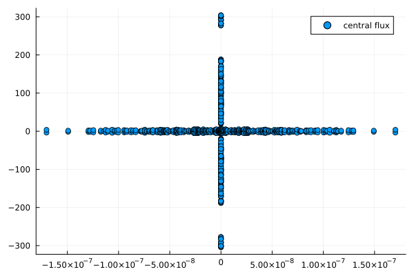
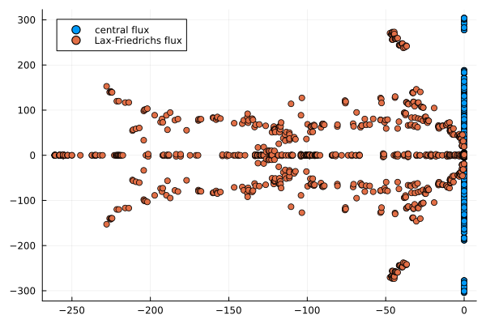
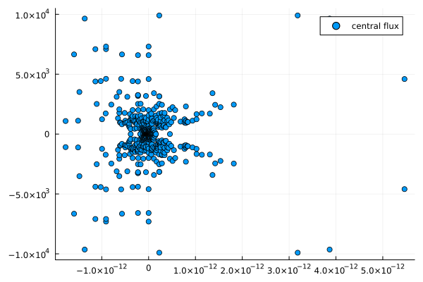
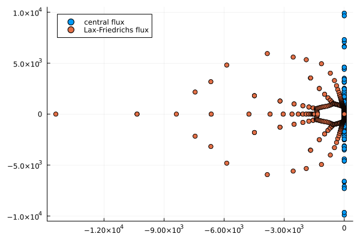
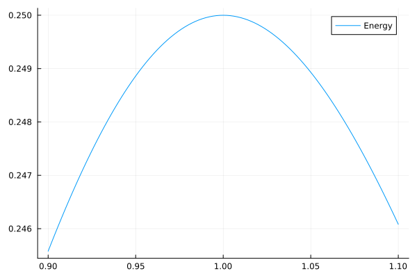
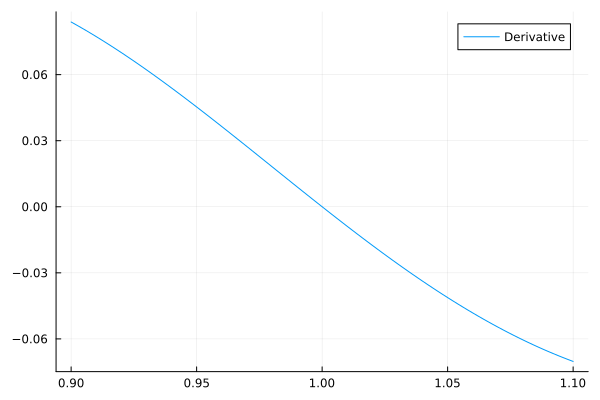
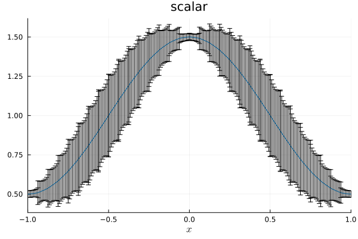
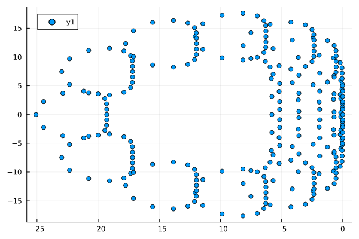

21: Differentiable programming


Julia and its ecosystem provide some tools for differentiable programming. Trixi.jl is designed to be flexible, extendable, and composable with Julia's growing ecosystem for scientific computing and machine learning. Thus, the ultimate goal is to have fast implementations that allow automatic differentiation (AD) without too much hassle for users. If some parts do not meet these requirements, please feel free to open an issue or propose a fix in a PR.
In the following, we will walk through some examples demonstrating how to differentiate through Trixi.jl.
Forward mode automatic differentiation
Trixi.jl integrates well with ForwardDiff.jl for forward mode AD.
Computing the Jacobian
The high-level interface to compute the Jacobian this way is jacobian_ad_forward. First, we load the required packages and compute the Jacobian of a semidiscretization of the compressible Euler equations, a system of nonlinear conservation laws.
using Trixi, LinearAlgebra, Plotsequations = CompressibleEulerEquations2D(1.4)solver = DGSEM(3, flux_central)mesh = TreeMesh((-1.0, -1.0), (1.0, 1.0), initial_refinement_level = 2, periodicity = true)semi = SemidiscretizationHyperbolic(mesh, equations, initial_condition_density_wave, solver; boundary_conditions = boundary_condition_periodic)J = jacobian_ad_forward(semi);size(J)(1024, 1024)Next, we compute the eigenvalues of the Jacobian.
λ = eigvals(J)scatter(real.(λ), imag.(λ), label = "central flux")
As you can see here, the maximal real part is close to zero.
relative_maximum = maximum(real, λ) / maximum(abs, λ)5.594603636106963e-10Interestingly, if we add dissipation by switching to the flux_lax_friedrichs at the interfaces, the maximal real part of the eigenvalues increases.
solver = DGSEM(3, flux_lax_friedrichs)semi = SemidiscretizationHyperbolic(mesh, equations, initial_condition_density_wave, solver; boundary_conditions = boundary_condition_periodic)J = jacobian_ad_forward(semi)λ = eigvals(J)scatter!(real.(λ), imag.(λ), label = "Lax-Friedrichs flux")
Although the maximal real part is still somewhat small, it's larger than for the purely central discretization.
relative_maximum = maximum(real, λ) / maximum(abs, λ)2.0781520244715817e-5However, we should be careful when using this analysis, since the eigenvectors are not necessarily well-conditioned.
λ, V = eigen(J)condition_number = cond(V)1.641253367073148e6In one space dimension, the situation is a bit different.
equations = CompressibleEulerEquations1D(1.4)solver = DGSEM(3, flux_central)mesh = TreeMesh((-1.0,), (1.0,), initial_refinement_level = 6, periodicity = true)semi = SemidiscretizationHyperbolic(mesh, equations, initial_condition_density_wave, solver; boundary_conditions = boundary_condition_periodic)J = jacobian_ad_forward(semi)λ = eigvals(J)scatter(real.(λ), imag.(λ), label = "central flux")
Here, the maximal real part is basically zero to machine accuracy.
relative_maximum = maximum(real, λ) / maximum(abs, λ)5.515633800528863e-16Moreover, the eigenvectors are not as ill-conditioned as in 2D.
λ, V = eigen(J)condition_number = cond(V)645.2799066408426If we add dissipation, the maximal real part is still approximately zero.
solver = DGSEM(3, flux_lax_friedrichs)semi = SemidiscretizationHyperbolic(mesh, equations, initial_condition_density_wave, solver; boundary_conditions = boundary_condition_periodic)J = jacobian_ad_forward(semi)λ = eigvals(J)scatter!(real.(λ), imag.(λ), label = "Lax-Friedrichs flux")
As you can see from the plot generated above, the maximal real part is still basically zero to machine precision.
relative_maximum = maximum(real, λ) / maximum(abs, λ)3.729575040821095e-17Let's check the condition number of the eigenvectors.
λ, V = eigen(J)condition_number = cond(V)89543.06137100571Note that the condition number of the eigenvector matrix increases but is still smaller than for the example in 2D.
Computing other derivatives
It is also possible to compute derivatives of other dependencies using AD in Trixi.jl. For example, you can compute the gradient of an entropy-dissipative semidiscretization with respect to the ideal gas constant of the compressible Euler equations as described in the following. This example is also available as the elixir examples/special_elixirs/elixir_euler_ad.jl
First, we create a semidiscretization of the compressible Euler equations.
using Trixi, LinearAlgebra, ForwardDiffequations = CompressibleEulerEquations2D(1.4)""" initial_condition_isentropic_vortex(x, t, equations::CompressibleEulerEquations2D)The classical isentropic vortex test case of- Chi-Wang Shu (1997) Essentially Non-Oscillatory and Weighted Essentially Non-Oscillatory Schemes for Hyperbolic Conservation Laws [NASA/CR-97-206253](https://ntrs.nasa.gov/citations/19980007543)"""function initial_condition_isentropic_vortex(x, t, equations::CompressibleEulerEquations2D) inicenter = SVector(0.0, 0.0) # initial center of the vortex iniamplitude = 5.0 # size and strength of the vortex rho = 1.0 # base flow v1 = 1.0 v2 = 1.0 vel = SVector(v1, v2) p = 25.0 rt = p / rho # ideal gas equation t_loc = 0.0 cent = inicenter + vel * t_loc # shift advection of center to handle periodic BC, but only for v1 = v2 = 1.0 cent = x - cent # distance to center point cent = SVector(-cent[2], cent[1]) r2 = cent[1]^2 + cent[2]^2 du = iniamplitude / (2 * π) * exp(0.5 * (1 - r2)) # vel. perturbation dtemp = -(equations.gamma - 1) / (2 * equations.gamma * rt) * du^2 # isentropic rho = rho * (1 + dtemp)^(1 / (equations.gamma - 1)) vel = vel + du * cent v1, v2 = vel p = p * (1 + dtemp)^(equations.gamma / (equations.gamma - 1)) prim = SVector(rho, v1, v2, p) return prim2cons(prim, equations)endmesh = TreeMesh((-1.0, -1.0), (1.0, 1.0), initial_refinement_level = 2, periodicity = true)solver = DGSEM(3, flux_lax_friedrichs, VolumeIntegralFluxDifferencing(flux_ranocha))semi = SemidiscretizationHyperbolic(mesh, equations, initial_condition_isentropic_vortex, solver; boundary_conditions = boundary_condition_periodic)u0_ode = Trixi.compute_coefficients(0.0, semi)size(u0_ode)(1024,)Next, we compute the Jacobian using ForwardDiff.jacobian.
J = ForwardDiff.jacobian((du_ode, γ) -> begin equations_inner = CompressibleEulerEquations2D(first(γ)) semi_inner = Trixi.remake(semi, equations = equations_inner, uEltype = eltype(γ)) Trixi.rhs_hyperbolic!(du_ode, u0_ode, semi_inner, 0.0) end, similar(u0_ode), [1.4]); # γ needs to be an `AbstractArray`round.(extrema(J), sigdigits = 2)(-220.0, 220.0)Note that we create a semidiscretization semi at first to determine the state u0_ode around which we want to perform the linearization. Next, we wrap the RHS evaluation inside a closure and pass that to ForwardDiff.jacobian. There, we need to make sure that the internal caches are able to store dual numbers from ForwardDiff.jl by setting uEltype appropriately. A similar approach is used by jacobian_ad_forward.
Note that the ideal gas constant does not influence the semidiscrete rate of change of the density, as demonstrated by
norm(J[1:4:end])0.0Here, we used some knowledge about the internal memory layout of Trixi.jl, an array of structs with the conserved variables as fastest-varying index in memory.
Differentiating through a complete simulation
It is also possible to differentiate through a complete simulation. As an example, let's differentiate the total energy of a simulation using the linear scalar advection equation with respect to the wave number (frequency) of the initial data.
using Trixi, OrdinaryDiffEqLowOrderRK, ForwardDiff, Plotsfunction energy_at_final_time(k) # k is the wave number of the initial condition equations = LinearScalarAdvectionEquation2D(1.0, -0.3) mesh = TreeMesh((-1.0, -1.0), (1.0, 1.0), initial_refinement_level = 3, periodicity = true) solver = DGSEM(3, flux_lax_friedrichs) initial_condition = (x, t, equation) -> begin x_trans = Trixi.x_trans_periodic_2d(x - equation.advection_velocity * t) return SVector(sinpi(k * sum(x_trans))) end semi = SemidiscretizationHyperbolic(mesh, equations, initial_condition, solver; uEltype = typeof(k), boundary_conditions = boundary_condition_periodic) ode = semidiscretize(semi, (0.0, 1.0)) sol = solve(ode, FRK65(), dt = 0.05, adaptive = false, save_everystep = false) return Trixi.integrate(energy_total, sol.u[end], semi)endk_values = range(0.9, 1.1, length = 101)plot(k_values, energy_at_final_time.(k_values), label = "Energy")
You see a plot of a curve that resembles a parabola with local maximum around k = 1.0. Why's that? Well, the domain is fixed but the wave number changes. Thus, if the wave number is not chosen as an integer, the initial condition will not be a smooth periodic function in the given domain. Hence, the dissipative surface flux (flux_lax_friedrichs in this example) will introduce more dissipation. In particular, it will introduce more dissipation for "less smooth" initial data, corresponding to wave numbers k further away from integers.
We can compute the discrete derivative of the energy at the final time with respect to the wave number k as follows.
round(ForwardDiff.derivative(energy_at_final_time, 1.0), sigdigits = 2)1.4e-5This is rather small and we can treat it as zero in comparison to the value of this derivative at other wave numbers k.
dk_values = ForwardDiff.derivative.((energy_at_final_time,), k_values);plot(k_values, dk_values, label = "Derivative")
If you remember basic calculus, a sufficient condition for a local maximum is that the first derivative vanishes and the second derivative is negative. We can also check this discretely.
second_derivative = round(ForwardDiff.derivative(k -> Trixi.ForwardDiff.derivative(energy_at_final_time, k), 1.0), sigdigits = 2)-0.9Having seen this application, let's break down what happens step by step.
function energy_at_final_time(k) # k is the wave number of the initial condition equations = LinearScalarAdvectionEquation2D(1.0, -0.3) mesh = TreeMesh((-1.0, -1.0), (1.0, 1.0), initial_refinement_level = 3, periodicity = true) solver = DGSEM(3, flux_lax_friedrichs) initial_condition = (x, t, equation) -> begin x_trans = Trixi.x_trans_periodic_2d(x - equation.advection_velocity * t) return SVector(sinpi(k * sum(x_trans))) end semi = SemidiscretizationHyperbolic(mesh, equations, initial_condition, solver; uEltype = typeof(k), boundary_conditions = boundary_condition_periodic) ode = semidiscretize(semi, (0.0, 1.0)) sol = solve(ode, FRK65(), dt = 0.05, adaptive = false, save_everystep = false) return Trixi.integrate(energy_total, sol.u[end], semi)endk = 1.0round(ForwardDiff.derivative(energy_at_final_time, k), sigdigits = 2)1.4e-5When calling ForwardDiff.derivative(energy_at_final_time, k) with k=1.0, ForwardDiff.jl will basically use the chain rule and known derivatives of existing basic functions to calculate the derivative of the energy at the final time with respect to the wave number k at k0 = 1.0. To do this, ForwardDiff.jl uses dual numbers, which basically store the result and its derivative w.r.t. a specified parameter at the same time. Thus, we need to make sure that we can treat these ForwardDiff.Dual numbers everywhere during the computation. Fortunately, generic Julia code usually supports these operations. The most basic problem for a developer is to ensure that all types are generic enough, in particular the ones of internal caches.
The first step in this example creates some basic ingredients of our simulation.
equations = LinearScalarAdvectionEquation2D(1.0, -0.3)mesh = TreeMesh((-1.0, -1.0), (1.0, 1.0), initial_refinement_level = 3, periodicity = true)solver = DGSEM(3, flux_lax_friedrichs);These do not have internal caches storing intermediate values of the numerical solution, so we do not need to adapt them. In fact, we could also define them outside of energy_at_final_time (but would need to take care of globals or wrap everything in another function).
Next, we define the initial condition
initial_condition = (x, t, equation) -> begin x_trans = Trixi.x_trans_periodic_2d(x - equation.advection_velocity * t) return SVector(sinpi(k * sum(x_trans)))end;as a closure capturing the wave number k passed to energy_at_final_time. If you call energy_at_final_time(1.0), k will be a Float64. Thus, the return values of initial_condition will be SVectors of Float64s. When calculating the ForwardDiff.derivative, k will be a ForwardDiff.Dual number. Hence, the initial_condition will return SVectors of ForwardDiff.Dual numbers.
The semidiscretization semi uses some internal caches to avoid repeated allocations and speed up the computations, e.g. for numerical fluxes at interfaces. Thus, we need to tell Trixi.jl to allow ForwardDiff.Dual numbers in these caches. That's what the keyword argument uEltype=typeof(k) in
semi = SemidiscretizationHyperbolic(mesh, equations, initial_condition, solver; uEltype = typeof(k), boundary_conditions = boundary_condition_periodic)┌──────────────────────────────────────────────────────────────────────────────────────────────────┐
│ SemidiscretizationHyperbolic │
│ ════════════════════════════ │
│ #spatial dimensions: ……………………………………… 2 │
│ mesh: ……………………………………………………………………………… TreeMesh{2, Trixi.SerialTree{2, Float64}} with length 85 │
│ equations: ………………………………………………………………… LinearScalarAdvectionEquation2D │
│ initial condition: …………………………………………… #9 │
│ boundary conditions: ……………………………………… Trixi.BoundaryConditionPeriodic │
│ source terms: ………………………………………………………… nothing │
│ solver: ………………………………………………………………………… DG │
│ total #DOFs per field: ………………………………… 1024 │
└──────────────────────────────────────────────────────────────────────────────────────────────────┘does. This is basically the only part where you need to modify your standard Trixi.jl code to enable automatic differentiation. From there on, the remaining steps
ode = semidiscretize(semi, (0.0, 1.0))sol = solve(ode, FRK65(), dt = 0.05, adaptive = false, save_everystep = false)round(Trixi.integrate(energy_total, sol.u[end], semi), sigdigits = 5)0.25do not need any modifications since they are sufficiently generic (and enough effort has been spend to allow general types inside these calls).
Propagating errors using Measurements.jl
 "Error bars" by Randall Munroe, linked from https://xkcd.com/2110
"Error bars" by Randall Munroe, linked from https://xkcd.com/2110
Similar to AD, Trixi.jl also allows propagating uncertainties using linear error propagation theory via Measurements.jl. As an example, let's create a system representing the linear advection equation in 1D with an uncertain velocity. Then, we create a semidiscretization using a sine wave as initial condition, solve the ODE, and plot the resulting uncertainties in the primitive variables.
using Trixi, OrdinaryDiffEqLowOrderRK, Measurements, Plots, LaTeXStringsequations = LinearScalarAdvectionEquation1D(1.0 ± 0.1)mesh = TreeMesh((-1.0,), (1.0,), initial_refinement_level = 5, periodicity = true)solver = DGSEM(3)semi = SemidiscretizationHyperbolic(mesh, equations, initial_condition_convergence_test, solver, uEltype = Measurement{Float64}, boundary_conditions = boundary_condition_periodic)ode = semidiscretize(semi, (0.0, 1.5))sol = solve(ode, BS3(); ode_default_options()...);plot(sol)
You should see a plot where small error bars are shown around the extrema and larger error bars are shown in the remaining parts. This result is in accordance with expectations. Indeed, the uncertain propagation speed will affect the extrema less since the local variation of the solution is relatively small there. In contrast, the local variation of the solution is large around the turning points of the sine wave, so the uncertainties will be relatively large there.
All this is possible due to allowing generic types and having good abstractions in Julia that allow packages to work together seamlessly.
Finite difference approximations
Trixi.jl provides the convenience function jacobian_fd to approximate the Jacobian via central finite differences.
using Trixi, LinearAlgebraequations = CompressibleEulerEquations2D(1.4)solver = DGSEM(3, flux_central)mesh = TreeMesh((-1.0, -1.0), (1.0, 1.0), initial_refinement_level = 2, periodicity = true)semi = SemidiscretizationHyperbolic(mesh, equations, initial_condition_density_wave, solver; boundary_conditions = boundary_condition_periodic)J_fd = jacobian_fd(semi)J_ad = jacobian_ad_forward(semi)relative_difference = norm(J_fd - J_ad) / size(J_fd, 1)1.1782028239788557e-7This discrepancy is of the expected order of magnitude for central finite difference approximations.
Automatic Jacobian sparsity detection and coloring
When solving large sparse nonlinear ODE systems originating from spatial discretizations with compact stencils such as the DG method with implicit time integrators, exploiting the sparsity of the Jacobian can lead to significant speedups in the Newton-Raphson solver. Similarly, steady-state problems can also be solved faster.
Trixi.jl supports efficient Jacobian computations by leveraging the SparseConnectivityTracer.jl and SparseMatrixColorings.jl packages. These tools allow to detect the sparsity pattern of the Jacobian and compute the optional coloring vector for efficient Jacobian evaluations. These are then handed over to the ODE solver from OrdinaryDiffEq.jl.
Below is a minimal example in 1D, showing how to use these packages with Trixi.jl. First, we define the the equation and mesh as for an ordinary simulation:
using Trixiadvection_velocity = 1.0equation = LinearScalarAdvectionEquation1D(advection_velocity)mesh = TreeMesh((-1.0,), (1.0,), initial_refinement_level = 4, periodicity = true)┌──────────────────────────────────────────────────────────────────────────────────────────────────┐
│ TreeMesh{1, Trixi.SerialTree{1, Float64}} │
│ ═════════════════════════════════════════ │
│ center: ………………………………………………………………………… [0.0] │
│ length: ………………………………………………………………………… 2.0 │
│ periodicity: …………………………………………………………… (true,) │
│ current #cells: …………………………………………………… 31 │
│ #leaf-cells: …………………………………………………………… 16 │
│ current capacity: ……………………………………………… 31 │
└──────────────────────────────────────────────────────────────────────────────────────────────────┘We define the basic floating point type used for the actual simulation and construct the solver:
float_type = Float64solver = DGSEM(polydeg = 3, surface_flux = flux_godunov, RealT = float_type)┌──────────────────────────────────────────────────────────────────────────────────────────────────┐
│ DG{Float64} │
│ ═══════════ │
│ basis: …………………………………………………………………………… LobattoLegendreBasis{Float64}(polydeg=3) │
│ mortar: ………………………………………………………………………… LobattoLegendreMortarL2{Float64}(polydeg=3) │
│ surface integral: ……………………………………………… SurfaceIntegralWeakForm │
│ │ surface flux: …………………………………………………… flux_godunov │
│ volume integral: ………………………………………………… VolumeIntegralWeakForm │
└──────────────────────────────────────────────────────────────────────────────────────────────────┘Next, we set up the sparsity detection. For this we need
using SparseConnectivityTracer # For Jacobian sparsity patternWe use the global TracerSparsityDetector() here.
jac_detector = TracerSparsityDetector()SparseConnectivityTracer.TracerSparsityDetector()Next, we retrieve the right element type corresponding to float_type for the Jacobian sparsity detection. For more details, see the API documentation of jacobian_eltype.
jac_eltype = jacobian_eltype(float_type, jac_detector)SparseConnectivityTracer.GradientTracer{Int64, BitSet}Now we can construct the semidiscretization for sparsity detection with jac_eltype as the datatype for the working arrays and helper datastructures.
semi_jac_type = SemidiscretizationHyperbolic(mesh, equation, initial_condition_convergence_test, solver; boundary_conditions = boundary_condition_periodic, uEltype = jac_eltype) # Supply sparsity detection datatype heretspan = (0.0, 1.0) # Re-used later in `rhs_hyperbolic!` evaluationode_jac_type = semidiscretize(semi_jac_type, tspan)u0_ode = ode_jac_type.u0du_ode = similar(u0_ode)64-element Vector{SparseConnectivityTracer.GradientTracer{Int64, BitSet}}:
#undef
#undef
#undef
#undef
#undef
#undef
#undef
#undef
#undef
#undef
⋮
#undef
#undef
#undef
#undef
#undef
#undef
#undef
#undef
#undefWrap the RHS for sparsity detection to match the expected signature f!(du, u) required by jacobian_sparsity.
rhs_wrapped! = (du, u) -> Trixi.rhs_hyperbolic!(du, u, semi_jac_type, tspan[1])jac_prototype = jacobian_sparsity(rhs_wrapped!, du_ode, u0_ode, jac_detector)64×64 SparseArrays.SparseMatrixCSC{Bool, Int64} with 272 stored entries:
⎡⣿⣿⠀⠀⠀⠀⠀⠀⠀⠀⠀⠀⠀⠀⠀⠀⠀⠀⠀⠀⠀⠀⠀⠀⠀⠀⠀⠀⠀⠀⠀⠈⎤
⎢⠀⠈⣿⣿⠀⠀⠀⠀⠀⠀⠀⠀⠀⠀⠀⠀⠀⠀⠀⠀⠀⠀⠀⠀⠀⠀⠀⠀⠀⠀⠀⠀⎥
⎢⠀⠀⠀⠈⣿⣿⠀⠀⠀⠀⠀⠀⠀⠀⠀⠀⠀⠀⠀⠀⠀⠀⠀⠀⠀⠀⠀⠀⠀⠀⠀⠀⎥
⎢⠀⠀⠀⠀⠀⠈⣿⣿⠀⠀⠀⠀⠀⠀⠀⠀⠀⠀⠀⠀⠀⠀⠀⠀⠀⠀⠀⠀⠀⠀⠀⠀⎥
⎢⠀⠀⠀⠀⠀⠀⠀⠈⣿⣿⠀⠀⠀⠀⠀⠀⠀⠀⠀⠀⠀⠀⠀⠀⠀⠀⠀⠀⠀⠀⠀⠀⎥
⎢⠀⠀⠀⠀⠀⠀⠀⠀⠀⠈⣿⣿⠀⠀⠀⠀⠀⠀⠀⠀⠀⠀⠀⠀⠀⠀⠀⠀⠀⠀⠀⠀⎥
⎢⠀⠀⠀⠀⠀⠀⠀⠀⠀⠀⠀⠈⣿⣿⠀⠀⠀⠀⠀⠀⠀⠀⠀⠀⠀⠀⠀⠀⠀⠀⠀⠀⎥
⎢⠀⠀⠀⠀⠀⠀⠀⠀⠀⠀⠀⠀⠀⠈⣿⣿⠀⠀⠀⠀⠀⠀⠀⠀⠀⠀⠀⠀⠀⠀⠀⠀⎥
⎢⠀⠀⠀⠀⠀⠀⠀⠀⠀⠀⠀⠀⠀⠀⠀⠈⣿⣿⠀⠀⠀⠀⠀⠀⠀⠀⠀⠀⠀⠀⠀⠀⎥
⎢⠀⠀⠀⠀⠀⠀⠀⠀⠀⠀⠀⠀⠀⠀⠀⠀⠀⠈⣿⣿⠀⠀⠀⠀⠀⠀⠀⠀⠀⠀⠀⠀⎥
⎢⠀⠀⠀⠀⠀⠀⠀⠀⠀⠀⠀⠀⠀⠀⠀⠀⠀⠀⠀⠈⣿⣿⠀⠀⠀⠀⠀⠀⠀⠀⠀⠀⎥
⎢⠀⠀⠀⠀⠀⠀⠀⠀⠀⠀⠀⠀⠀⠀⠀⠀⠀⠀⠀⠀⠀⠈⣿⣿⠀⠀⠀⠀⠀⠀⠀⠀⎥
⎢⠀⠀⠀⠀⠀⠀⠀⠀⠀⠀⠀⠀⠀⠀⠀⠀⠀⠀⠀⠀⠀⠀⠀⠈⣿⣿⠀⠀⠀⠀⠀⠀⎥
⎢⠀⠀⠀⠀⠀⠀⠀⠀⠀⠀⠀⠀⠀⠀⠀⠀⠀⠀⠀⠀⠀⠀⠀⠀⠀⠈⣿⣿⠀⠀⠀⠀⎥
⎢⠀⠀⠀⠀⠀⠀⠀⠀⠀⠀⠀⠀⠀⠀⠀⠀⠀⠀⠀⠀⠀⠀⠀⠀⠀⠀⠀⠈⣿⣿⠀⠀⎥
⎣⠀⠀⠀⠀⠀⠀⠀⠀⠀⠀⠀⠀⠀⠀⠀⠀⠀⠀⠀⠀⠀⠀⠀⠀⠀⠀⠀⠀⠀⠈⣿⣿⎦Optionally, we can also compute the coloring vector to reduce Jacobian evaluations to 1 + maximum(coloring_vec) for finite differencing and maximum(coloring_vec) for algorithmic differentiation. For this, we need
using SparseMatrixColoringsWe partition by columns as we are using finite differencing here. One would also partition by columns if forward-based algorithmic differentiation were used, and only partition by rows if reverse-mode AD were used. See also the documentation of the now deprecated SparseDiffTools.jl package, the predecessor in spirit to SparseConnectivityTracer.jl and SparseMatrixColorings.jl, for more information.
coloring_prob = ColoringProblem(; structure = :nonsymmetric, partition = :column)coloring_alg = GreedyColoringAlgorithm(; decompression = :direct)coloring_result = coloring(jac_prototype, coloring_prob, coloring_alg)coloring_vec = column_colors(coloring_result)64-element Vector{Int64}:
1
2
3
4
1
2
3
5
1
2
⋮
5
1
2
3
4
1
2
3
5Now, set up the actual semidiscretization for the simulation. The datatype is automatically retrieved from the solver (in this case float_type = Float64).
semi_float_type = SemidiscretizationHyperbolic(mesh, equation, initial_condition_convergence_test, solver; boundary_conditions = boundary_condition_periodic)┌──────────────────────────────────────────────────────────────────────────────────────────────────┐
│ SemidiscretizationHyperbolic │
│ ════════════════════════════ │
│ #spatial dimensions: ……………………………………… 1 │
│ mesh: ……………………………………………………………………………… TreeMesh{1, Trixi.SerialTree{1, Float64}} with length 31 │
│ equations: ………………………………………………………………… LinearScalarAdvectionEquation1D │
│ initial condition: …………………………………………… initial_condition_convergence_test │
│ boundary conditions: ……………………………………… Trixi.BoundaryConditionPeriodic │
│ source terms: ………………………………………………………… nothing │
│ solver: ………………………………………………………………………… DG │
│ total #DOFs per field: ………………………………… 64 │
└──────────────────────────────────────────────────────────────────────────────────────────────────┘Supply the sparse Jacobian prototype and the optional coloring vector. Internally, an ODEFunction with jac_prototype = jac_prototype and colorvec = coloring_vec is created.
ode_jac_sparse = semidiscretize(semi_float_type, tspan, jac_prototype = jac_prototype, colorvec = coloring_vec)ODEProblem with uType Vector{Float64} and tType Float64. In-place: true
Non-trivial mass matrix: false
timespan: (0.0, 1.0)
u0: 64-element Vector{Float64}:
0.9999999999999997
0.9458368155275491
0.8598245137872117
0.8086582838174553
0.8086582838174549
0.7597439986877508
0.6868262901839228
0.6464466094067264
0.646446609406726
0.610227980121667
⋮
1.353553390593274
1.3535533905932735
1.3131737098160772
1.2402560013122492
1.1913417161825453
1.1913417161825448
1.1401754862127882
1.0541631844724508
1.0000000000000002You can now solve the ODE problem efficiently with an implicit solver. Currently we are bound to finite differencing here.
using OrdinaryDiffEqSDIRK, ADTypessol = solve(ode_jac_sparse, TRBDF2(; autodiff = AutoFiniteDiff()), dt = 0.1, save_everystep = false);Linear systems
When a linear PDE is discretized using a linear scheme such as a standard DG method, the resulting semidiscretization yields an affine ODE of the form
\[\partial_t u(t) = A u(t) - b,\]
where A is a linear operator ("matrix") and b is a vector. Trixi.jl allows you to obtain this linear structure in a matrix-free way by using linear_structure. The resulting operator A can be used in multiplication, e.g. mul! from LinearAlgebra, converted to a sparse matrix using sparse from SparseArrays, or converted to a dense matrix using Matrix for detailed eigenvalue analyses. For example,
using Trixi, LinearAlgebra, Plotsequations = LinearScalarAdvectionEquation2D(1.0, -0.3)solver = DGSEM(3, flux_lax_friedrichs)mesh = TreeMesh((-1.0, -1.0), (1.0, 1.0), initial_refinement_level = 2, periodicity = true)semi = SemidiscretizationHyperbolic(mesh, equations, initial_condition_convergence_test, solver; boundary_conditions = boundary_condition_periodic)A, b = linear_structure(semi)size(A), size(b)((256, 256), (256,))Next, we compute the eigenvalues of the linear operator.
λ = eigvals(Matrix(A))scatter(real.(λ), imag.(λ))
As you can see here, the maximal real part is close to machine precision.
λ = eigvals(Matrix(A))relative_maximum = maximum(real, λ) / maximum(abs, λ)-3.739241340386926e-16Since the linear structure defines the action of the linear matrix-alike operator A on a vector, Krylov-subspace based iterative solvers can be employed to efficiently solve the resulting linear system. For instance, one may use the Krylov.jl package to solve e.g. steady-stage problems, i.e., problems where $\partial_t u(t) = 0$. Note that the present problem does not possess an actual steady state.
Anyways, to solve the linear system $A u = b$, one can use for instance the GMRES method:
using Krylovu_steady_state, solve_stats = gmres(A, b)([0.0, 0.0, 0.0, 0.0, 0.0, 0.0, 0.0, 0.0, 0.0, 0.0 … 0.0, 0.0, 0.0, 0.0, 0.0, 0.0, 0.0, 0.0, 0.0, 0.0], SimpleStats
niter: 0
solved: true
inconsistent: false
indefinite: false
npcCount: 0
residuals: []
Aresiduals: []
κ₂(A): []
allocation timer: 17.61μs
timer: 23.60μs
status: x is a zero-residual solution
)Package versions
These results were obtained using the following versions.
using InteractiveUtilsversioninfo()using PkgPkg.status(["Trixi", "OrdinaryDiffEqLowOrderRK", "OrdinaryDiffEqSDIRK", "Plots", "LaTeXStrings", "ForwardDiff", "SparseConnectivityTracer", "SparseMatrixColorings", "ADTypes", "Krylov", "LinearAlgebra", "Measurements"], mode = PKGMODE_MANIFEST)Julia Version 1.10.12
Commit d93beab124c (2026-08-15 10:29 UTC)
Build Info:
Official https://julialang.org/ release
Platform Info:
OS: Linux (x86_64-linux-gnu)
CPU: 4 × AMD EPYC 9V74 80-Core Processor
WORD_SIZE: 64
LIBM: libopenlibm
LLVM: libLLVM-15.0.7 (ORCJIT, znver3)
Threads: 1 default, 0 interactive, 1 GC (on 4 virtual cores)
Environment:
JULIA_PKG_SERVER_REGISTRY_PREFERENCE = eager
Status `~/work/Trixi.jl/Trixi.jl/docs/Manifest.toml`
[47edcb42] ADTypes v1.24.0
[f6369f11] ForwardDiff v1.4.5
[ba0b0d4f] Krylov v0.10.9
[b964fa9f] LaTeXStrings v1.4.1
[eff96d63] Measurements v2.14.1
[1344f307] OrdinaryDiffEqLowOrderRK v2.2.5
[2d112036] OrdinaryDiffEqSDIRK v2.9.2
[91a5bcdd] Plots v1.41.7
[9f842d2f] SparseConnectivityTracer v1.2.3
[0a514795] SparseMatrixColorings v0.4.27
[a7f1ee26] Trixi v0.17.6-DEV `~/work/Trixi.jl/Trixi.jl`
[37e2e46d] LinearAlgebraThis page was generated using Literate.jl.